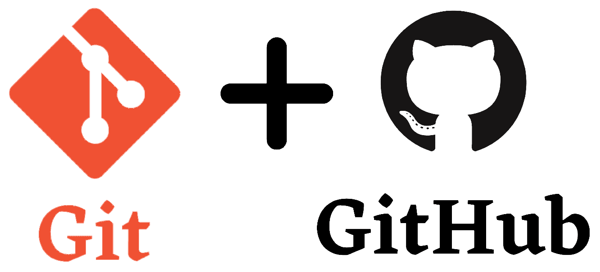
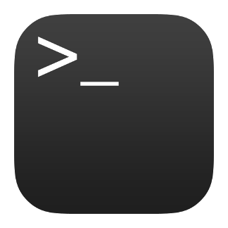

Herramientas
Mis herramientas de desarrollo habituales son:
Visual Studio Code

Editor de codigo:
Uso de multi cursores,
Edicion rapida,
Atajos, entre otros.
Git & GitHub
Mis habilidades en control de versiones son:
Creacion de repositorios GitHub,
Uso de comandos basicos como:,
git pull, git push, git checkout, entre otros.
Consola de comandos
Conozco el uso basico de las consolas:
Windows CMD, PowerShell,
y Linux Bach, en usos tales como:
Configuracion de permisos con mkdir,
Navegacion entre directorios,
Manipulacion de archivos, entre otros.